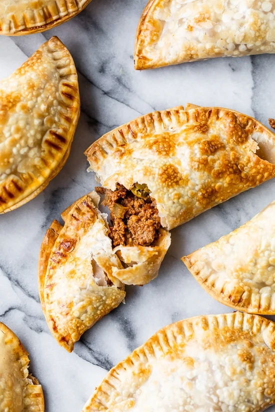

Salsa Chicken Empanda

Description
Delious empanadas, easy preperation what more can you ask for? This recipie requires a crockpot, and the meat roughly 4 hours to prepare. The empanadas then take about 10 mintues to prep, and 15 minutes in the air fryer. Then you are good to go :D
Crock pot salsa chicken prep
Ingredients
- 1-1/2 lbs lean skinless chicken thigh filets,
- 1 cup chunks salsa
- adobo seasoning, or salt to taste
- 1/4 tsp garlic powder
- 3/4 tsp ground cumin
- salt, to taste
Steps
- Season the chicken with adobo (or salt), then place in the crock pot and top with salsa, garlic powder and 1/2 tsp cumin.
- Cover and cook LOW for 4 hours. When cooked, remove the chicken and set on a large plate; shred with two forks. Pour the liquid into a bowl and reserve, then place the shredded chicken back into the crock pot, adjust salt to taste and add remaining 1/4 tsp cumin.
- Pour 3/4 cup of the reserved liquid back into the crock pot and cover until ready to serve..
- Makes about 2 3/4 cups chicken.
Making the empandas!
Ingredients
- 8 Goya empanada discs, in frozen section, thawed
- 1 egg white, whisked
- 1 teaspoon water
- Salsa Chicken prepared in previous step
Steps
- Spray the air fryer basket generously with olive oil spray to avoid sticking, or line the basket with air fryer parchment paper.
- Place 2 tablespoons of the salsa chicken mix in the center of each disc. Fold in half and use a fork to seal the edges. Repeat with the remaining dough.
- Whisk the egg whites with water, then brush the tops of the empanadas.
- Air fry in a single layer, in batches as needed 350F 8 minutes, turning halfway or until golden. Remove from heat and repeat with the remaining empanadas.